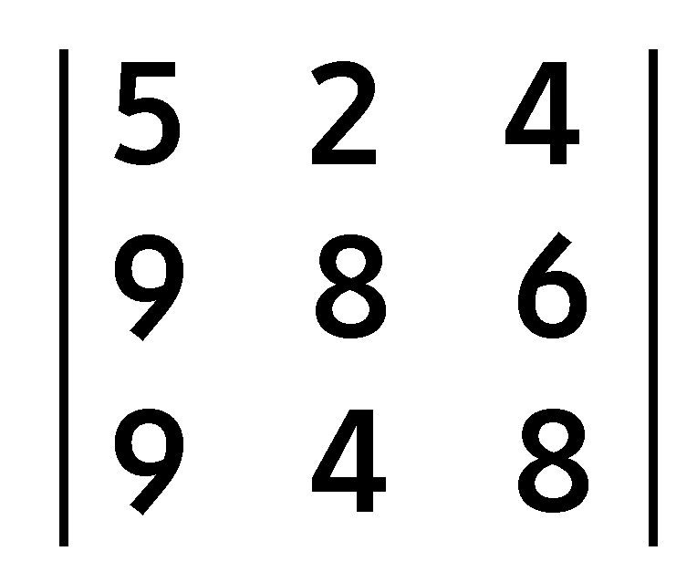

O que é uma matriz de ordem 3?
Na álgebra linear, uma matriz é um quadro rectangular composto por números. Uma matriz costuma ser representada por uma letra maiúscula, tal como A, e tem um determinado número de linhas e de colunas. Neste caso, temos 3 linhas e 3 colunas (3 x 3). Ler mais
Resultado